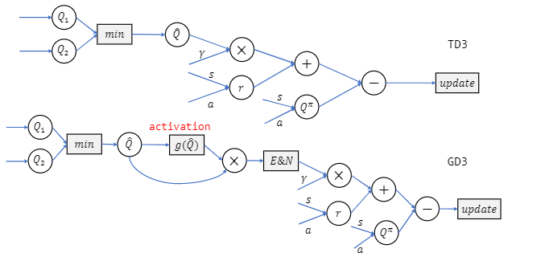
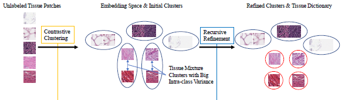
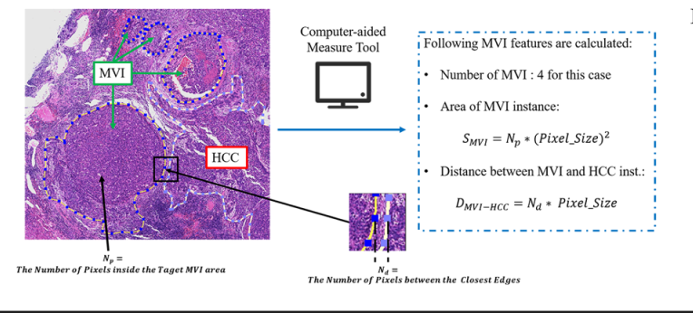
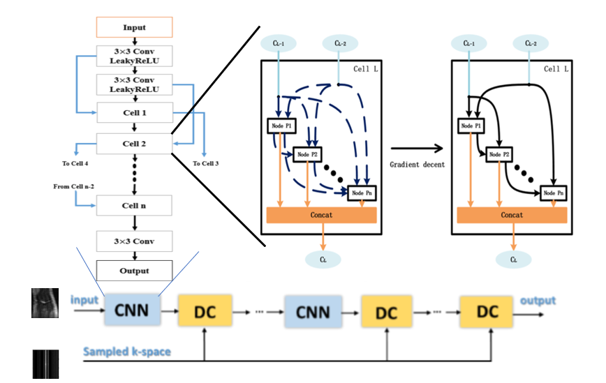
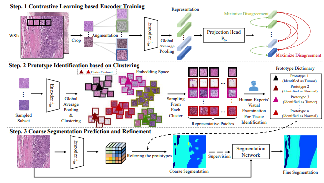
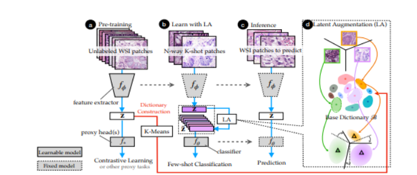
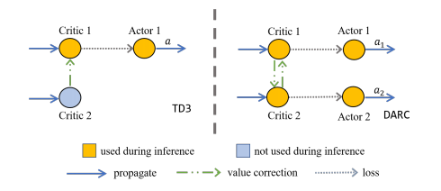
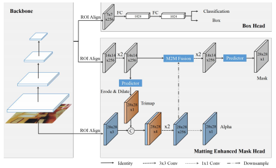

Dr. Jiangpeng Yan 严江鹏Principal Scientist @ HuaweiPh.D. @ THUEmail: yanjp13 AT tsinghua DOT org DOT cn |
|


Biography
I am currently a principal scientist in Huawei (Top Minds Project). Feel free to email me for any collaboration！
I obtained my Ph.D. from 2017 to 2022 at Tsinghua University (THU), supervised by Prof. Xiu Li. I received B.Eng in Department of Automation and B.Sc in Management at THU from 2013 to 2017.
I acted as a research leader for Tsinghua Intelligent Computation Lab where I founded the Medical Image Analysis Student Research Group and co-founded Reinforcement Learning Student Research Group.
I was fortunate to have a half-year internship supervised by Dr. Qiong Yan at SenseTime in 2018. I joined Tencent AI Lab as a research intern in 2020, working closely with Dr. Hanbo Chen and Dr. Jianhua Yao with two valuable years.
News
- [12/2023] proud to develop the inteligent headlights HUAWEI X PIXEL for M9!
- [11/2023] 1 paper on using unsupervised clustering to discover new cancer cachexia subtype is accepted by Nutrition (IF=4.4)!
- [09/2023] 1 paper on medical image enhancement is accepted by TNNLS (IF=10.4)， Congrats to Mr. Chunming He!
- [08/2023] 1 paper on medical image segmentation is accepted by Medical Image Analysis (IF=10.9)， Congrats to Dr. Zhe Xu!
- [07/2023] 1 paper on offline reinforcement learning is accepted by ECAI2023!
- [02/2023] 1 paper on human-machine collaborate histopathology analysis is accepted by IPMI2023!
- [10/2022] 1 paper on reinforcement learning is accepted by Neurocomputing (IF=5.8)， Congrats to Dr. Jiafei Lyv!
- [10/2022] I start my career at Huawei!
- [10/2022] 1 paper on instance segmentation is accepted by Neurocomputing (IF=5.8)!
- [09/2022] I finish two valuable internship years in Tencent AI Lab, many thanks to my supervisors (Dr. Hanbo Chen and Dr. Jianhua Yao) and talented collaborators (Mr. Jiawei Yang, Mr. Xiaoyu Chen, etc.) !
- [08/2022] Yes, I defend my PhD thesis!
- [08/2022] 1 paper on reinforcement learning is accepted by PRICAI2022!
- [07/2022] 1 paper on hepatocellular carcinoma is accepted by Hepatology International (IF=9.0), codes are available!
- [05/2022] Fortunately collaborate with Dr. Zhe Xu for publishing IEEE JBHI IF=7.0), MICCAI22, IEEE TMI IF=11.0) in a row!
- [03/2022] 1 paper on self-supervised WSI analysis is accepted by CMIG (IF=7.4)!
- [01/2022] 1 paper on self-supervised WSI analysis is accepted by ICLR 2022, codes are available!
- [10/2021] 1 paper on reinforcement learning is accepted by AAAI 2022, codes are available!
- [07/2021] 1 paper on instance segmentation is accepted by ACM MM 2021, codes are available!
- [05/2021] 2 papers on WSI analysis are accepted by MICCAI 2021 (one paper is early accepted, Top 13%)!
- [09/2020] join Tencent AI Lab as a research intern.
- [08/2020] 1 paper on MRI reconstruction is accepted by CMIG IF=7.4), codes are available!
- [06/2020] 1 paper on multimodal registration is accepted by MICCAI 2020!
Selected Publications | Full-list in Google Scholar
| /*Journal*/ | |
|  |
Value Activation for Bias Alleviation: Generalized-activated Deep Double Deterministic Policy Gradients Jiafei Lyu , Yu Yang, Jiangpeng Yan#, Xiu Li#. Neurocomputing, 2023. [paper] |
|  |
Deep Contrastive Learning Based Tissue Clustering for Annotation-free Histopathology Image Analysis Jiangpeng Yan*, Hanbo Chen* , Xiu Li, Jianhua Yao. Computerized Medical Imaging and Graphics (CMIG), 2022. [paper] |
|  |
A Deep Learning Model with Incorporation of Microvascular Invasion Area as a Factor in Predicting Prognosis of Hepatocellular Carcinoma after R0 Hepatectomy Kang Wang*, Yanjun Xiang*, Jiangpeng Yan*, Yuyao Zhu*, Hanbo Chen*, Hongming Yu, Yuqiang Cheng, Xiu Li, Wei Dong, Yan Ji, Jingjing Li, Dong Xie, Wan Yee Lau, Jianhua Yao, Shuqun Cheng. Hepatology International (HI), 2022. [paper][code] |

|
Anti-interference from Noisy Labels: Mean-Teacher-assisted Confident Learning for Medical Image Segmentation Zhe Xu, Donghuan Lu, Jie Luo, Yixin Wang, Jiangpeng Yan, Kai Ma, Yefeng Zheng, Raymond Kai-yu Tong IEEE Transactions on Medical Imaging (TMI), 2022. [paper] |

|
All-Around Real Label Supervision: Cyclic Prototype Consistency Learning for Semi-supervised Medical Image Segmentation Zhe Xu, Yixin Wang, Donghuan Lu, Lequan Yu, Jiangpeng Yan, Jie Luo, Kai Ma, Yefeng Zheng, Raymond Kai-yu Tong IEEE Journal of Biomedical and Health Informatics (JBHI), 2022. [paper] |
|  |
Neural Architecture Search for Compressed Sensing Magnetic Resonance Image Reconstruction Jiangpeng Yan, Shuo Chen, Yongbin Zhang, Xiu Li. Computerized Medical Imaging and Graphics (CMIG), 2020.[paper][code] |
| /*Conference*/ | |
|  |
Human-machine Interactive Tissue Prototype Learning for Label-efficient Histopathology Image Segmentation Wentao Pan* , Jiangpeng Yan*#, Hanbo Chen* , Jiawei Yang, Zhe Xu, Xiu Li#, Jianhua Yao#. Information Processing in Medical Imaging (IPMI), 2023.(Oral) [paper] |
|  |
Towards Better Understanding and Better Generalization of Low-shot Classification in Histology Images with Contrastive Learning Jiawei Yang , Hanbo Chen , Jiangpeng Yan, Xiaoyu Chen, Jianhua Yao. International Conference on Learning Representations (ICLR), 2022. [paper] [code] |
|  |
Efficient Continuous Control with Double Actors and Regularized Critics Jiafei Lyv , Xiaoteng Ma , Jiangpeng Yan, Xiu Li. AAAI Conference on Artificial Intelligence (AAAI), 2022.(Oral) [paper] [code] |

|
Hierarchical Attention Guided Framework for Multi-resolution Collaborative Whole Slide Image Segmentation Jiangpeng Yan* , Hanbo Chen* , Kang Wang* , Yan Ji, Yuyao Zhu, Jingjing Li, Dong Xie, Zhe Xu, Junzhou Huang, Shuqun Cheng, Xiu Li, Jianhua Yao. Medical Image Computing and Computer Assisted Interventions (MICCAI), 2021.(Early Accept, Top 13%) [paper] |

|
Implicit Feature Refinement for Instance Segmentation Lufan Ma, Tiancai Wang, Bin Dong, Jiangpeng Yan, Xiu Li, Xiangyu Zhang. ACM International Conference on Multimedia (ACM MM), 2021. [paper][code] |
|  |
Matting Enhanced Mask R-CNN Lufan Ma, Bin Dong, Jiangpeng Yan, Xiu Li. IEEE International Conference on Multimedia and Expo (ICME), 2021.(Oral) [paper] |
Special Thanks to Our Group Members:
Dr. Jiafei Lyv, 2020.09 - Now, currently pursues his PhD in THU and leads RL Student Research Group.
Dr. Rui Yang, 2019.09 - 2021.09, was a member in RL Student Research Group and currently pursues his PhD in HKUST.
Ms. Feng Luo, 2019.09 - 2021.09, was a member in MedIA Student Research Group and currently in Tencent.
Ms. Lufan Ma, 2019.09 - 2021.09, was a member in MedIA Student Research Group and currently in Tencent.
Dr. Zhe Xu, 2018.09 - 2020.09, was a member in MedIA Student Research Group and currently pursues his PhD in CUHK.
...
Academic Services
-
Regular Journal Reviewer of:
IEEE Transactions on Medical Imaging
Pattern Recognition
Expert Systems With Applications
Engineering Applications of Artificial Intelligence
Knowledge-based Systems
Computer Methods and Programs in Biomedicine
Computers in Biology and Medicine
Information Sciences
Neurocomputing
IEEE Transactions on Emerging Topics in Computational Intelligence
···
-
Regular Conference Reviewer of:
AAAI, MICCAI, ICASSP, IJCNN, ···
Teaching Assistant
2020.9-2021.2, Frontier of Artificial Intelligence (graduate course), Tsinghua Shenzhen International Graduate School.
2017.9-2018.2, Data Structure (undergraduate course), Tsinghua University.